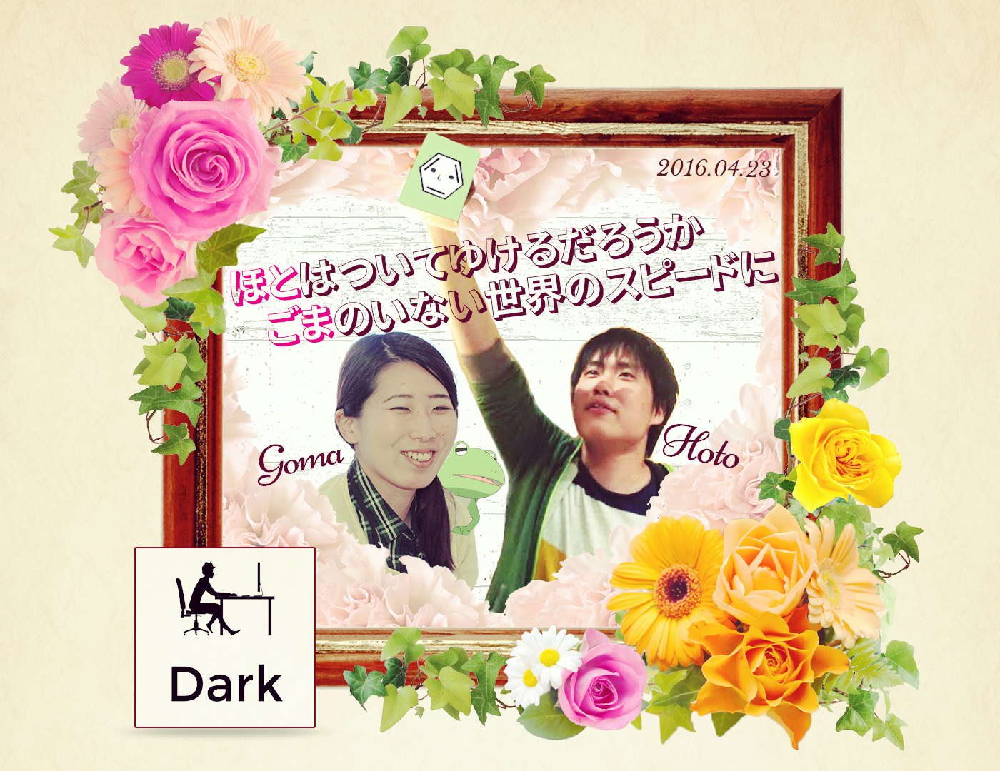

ご結婚おめでとうございます！

〜お祝いの言葉〜
ara-ta3 新郎/新婦との関係: 闇
BLEACh48 FEAR FOR FIGHT
恐れることは ただ一つ gomaを知らぬ 企業戦士と為ること
OMEGA 新郎/新婦との関係: THE INSIDE OF THE DARKNESS
BLEACH55 THE BLOOD WARFARE
一歩踏み出す 二度と戻れぬ hotoのいる世界の 愛の海へ
mihyaeru21 新郎/新婦との関係: 仮想同期/闇
BLEACH19 THE BLACK MOON RISING
そう、何ものも hotogomaの世界を 変えられはしない
isaoeka 新郎/新婦との関係: 仮想同期/闇
そら（結婚したとなれば）そう（祝うもん）よ
そう（末永くお幸せに）なれば、そう（幸せのお裾分けをお願いしたく）なるわな
achan 新郎/新婦との関係: カタンの開拓者たち（チュートリアル）
https://jsfiddle.net/atariyo/9d44h49L/scrtree
おめでとう！

noraneko 新郎/新婦との関係: 同僚/闇
初めに会った時から二人はすごく仲が良くて、まさか新婚さんだったとは！という感じでした。会社帰りにたまに二人を見かけて微笑ましくお家に帰ってます！おめでとう！
jp_taku2 新郎/新婦との関係:仮想同期/同僚[社内公認の...]
全社メールで後藤さんだった彼女.
数分後に石川さんで全社メールを送った姿に周囲が, 戸惑い喜びの笑いを上げておりました.
題名を付けるなら余命1分の後藤と発表したい内容でした！！
papix 新郎/新婦との関係: 同僚/校長
入社半年くらい前のGW, 当時好きだった人に告白して失敗したという傷心の新郎を精一杯もてなして慰めたのに, その一ヶ月後にしれっと新婦であるところのごま氏と付き合い始めたことには感動しました.
特にラストシーンで新郎が親指を立てながら五反田に沈んでいくシーンは涙無しにには見られませんでした!
urataku 新郎/新婦との関係: 闇
ホトゴマご結婚おめでとうごじゃいまーす！！
ぼくは ただきみたちに
おめでとうを言う練習をする